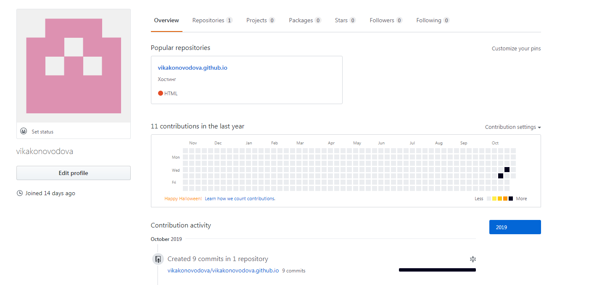
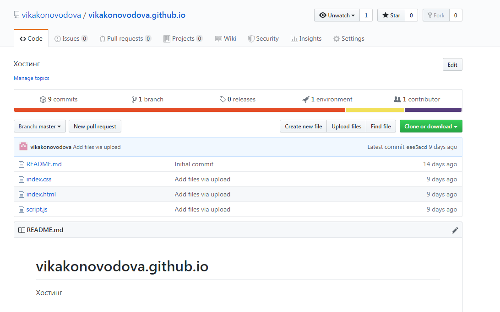

00:00:00
Коноводова Виктория ИДМ-19-02
Лабораторная работа №1 "Экосистема разработки программ с открытым кодом"
В процессе выполнения первой лабораторной работы были созданы аккаунт на GitHub и страница-отчет с использованием GitHub как хостинг


Лабораторная работа №2 "Разработка простого веб-приложения"
Сформирована команда для выполнения проекта и распределены роли:
- Коноводова Виктория (Администрирование, Системное программирование)
- Табольский Егор (Бизнес-анализ, Консалтинг, Внедрение)
- Титоренко Иван (Администрирование, Управление проектами, Прикладное программирование
- Юшкин Кирилл (Системное программирование, Прикладное программирование, Научные исследования
Лабораторная работа №3 "Настройка локальной сети передачи данных"
Здесь будет отчет о выполнении 3-ей лабораторной работы, выполненной в программе Cisco Packet Tracer
Подготовка к экзамену